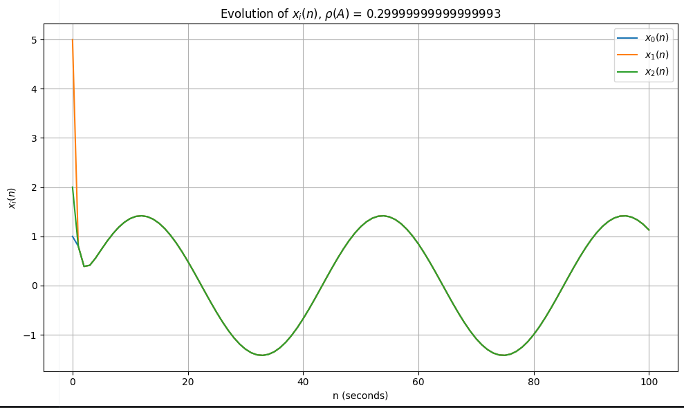
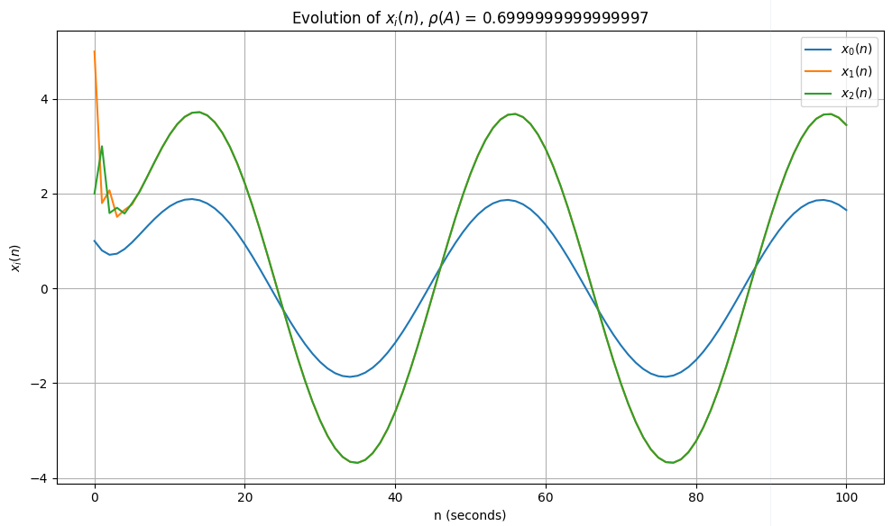
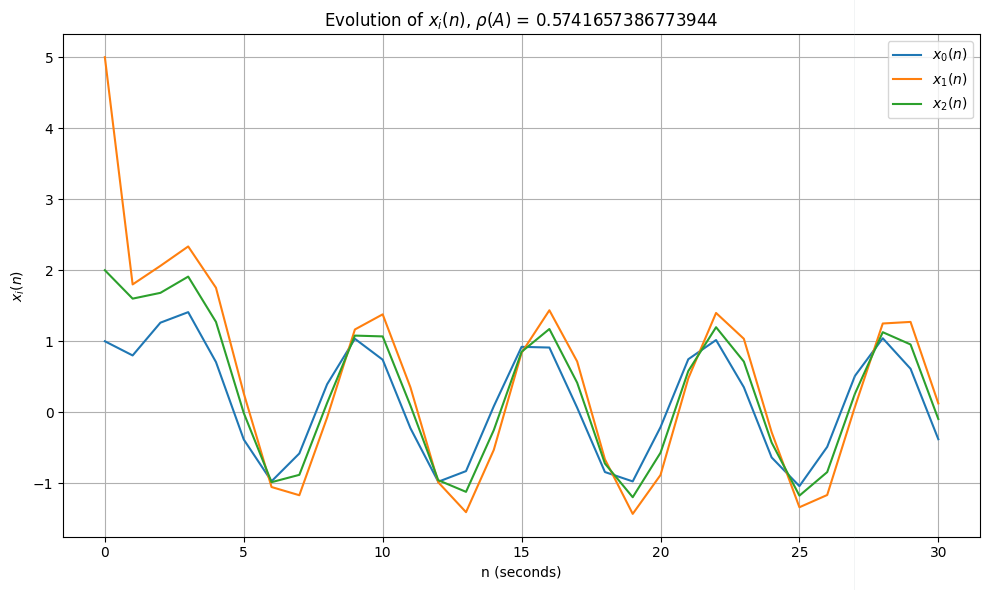
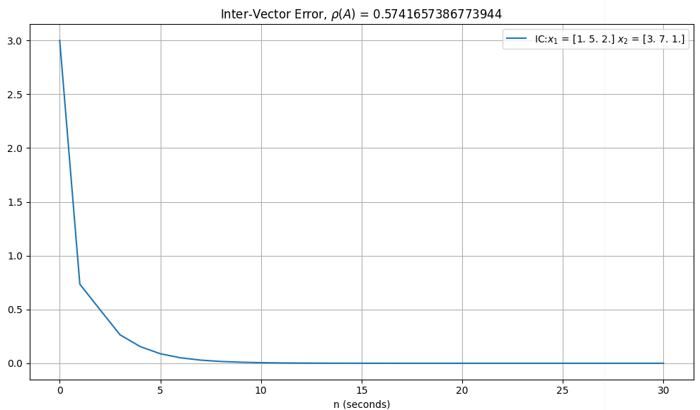
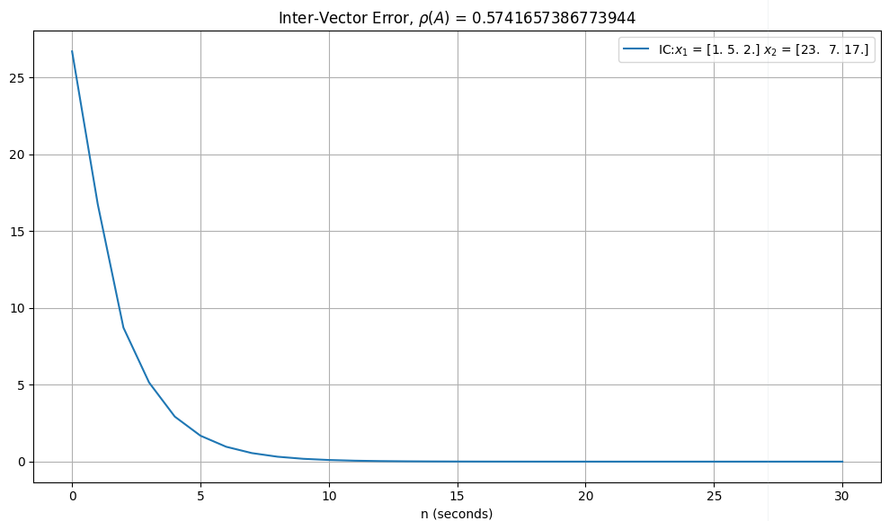
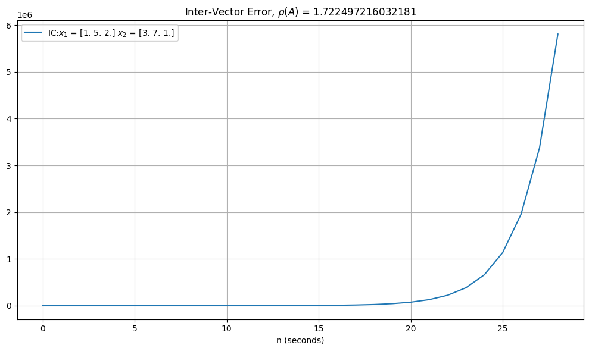
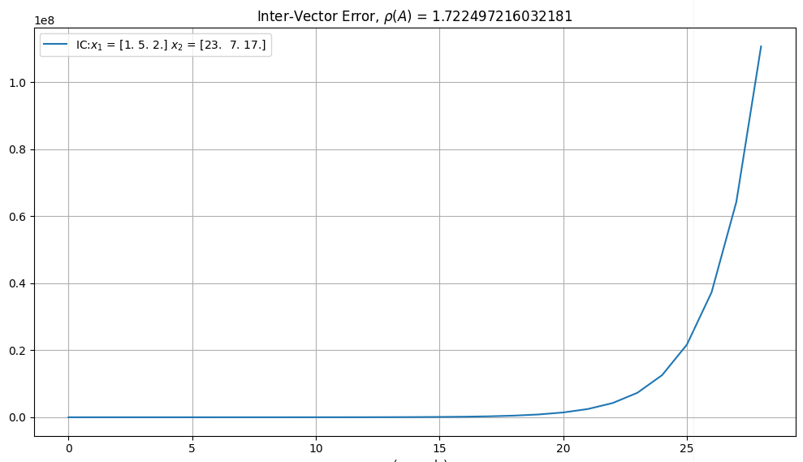

file_data
| file_name | reservoir_computer_code_review.pdf |
| author | ghostnation |
| date | 22MAY2025 |
1
Code structure
The hidden state of a reservoir compute network is evaluated via a sum of a portion of the previous state and a portion of the forcing function. In autoregressive modeling, the previous values of the inputs are evaluated (within a certain window to ensure variable length data is not fitted, introducing bias) with least squares regression methods. Utilizing a simple least square regression ostensibly (although not in all cases) enables forecasting of trends in the data, which is modeled by a function that ingests a window of time series data and applies some coefficient to all lagging values. In the following investigation, we will scrutinize the effect of manipulating the spectral radius of the weight matrix on the lagging coefficients and the convergent and divergent effects of such parametrizations on the evolution of the system. The equation below shows how a hidden state evolves over time.
1
Hidden State Equation
$$ x_i(n+1) = \tanh\left[ \sum_{j=0}^{N-1} a_{ij} x_j(n) + b_i u(n) \right] $$
$$ x_i(n+1) = \tanh\left[ \sum_{j=0}^{N-1} a_{ij} x_j(n) + b_i u(n) \right] $$

test captio data forcing the figure element here
Although typically not the case in reservoir compute networks, for the sake of intuition, assume that the input is a one dimensional scalar value, and that the hidden state \(x_i\) evolves as a one dimensional scalar value over the elapse of the training window. If the coefficient \(a_i\) is arbitrarily set to a value greater than 1, then we expect that for each time step in which the coefficient is applied (recall that \(a_i ~\text{and}~ b_i \) are static parameters in an RC network), the value of \(x\) would grow in that particular dimension if the hidden state is unbounded. However, RC networks implement the activation of the cumulative sum term with tanh, such that large parameters converge to 1 or -1, an effect often referred to as "saturation". In a multidimensional scenario where the input, and thus the hidden state, are comprised of multiple dimensions, we must identify the spectral radius of the coefficient matrix \(\mathbf{a}\), which will now be represented as a square matrix of the same dimensions as the input. Knowledge of the spectral radius provides knowledge of the supremum (lowest upper bound) of the eigenvalues, which will be used as a metric to determine the stability or instability of the system. We are interested in the spectral radius due to the insights provided by Gelfand's formula:
2
Gelfand's Formula
$$ \rho(A) = \lim_{k\to\infty} \|A^k\|^{1/k} $$
$$ \rho(A) = \lim_{k\to\infty} \|A^k\|^{1/k} $$
Gelfand's formula evinces the fact that over time (and many subsequent applications of the matrix), the growth rate of the matrix's powers, as measured by any matrix norm, will always converge to its spectral radius. This is salient to our analysis of RC networks as each previous time step is fed into the subsequent time step to calculate the hidden state, with a matrix transformation occuring during the process of being a fundamental component of the transformation. However, due to the "clipping" effect of tanh, we will only observe saturation at the upper and lower boundaries [-1,1] (although we provide an example of non-activated time series data to show instability in a later figure).
1.1
Implementation
The program that will be implemented to demonstrate the effects of arbitrarily selected \(\mathbf{a}\) coefficient matrices. The user is able to set the dimensionality of the hidden state, analysis time window, and frequency of the sinusoidal function.
RC Spectral Analyzer Setup
The user-defined parameters that are implemented in the network to set up the time series data. Here we design a forcing function, and set up the transformation matrix \(a_i\) and scalar coefficient \(b_i\), to appropriate dimensions.
In this program, we utilize numpy's random number generator utility to generate the coefficient matrix; although, if we are to design the matrix manually, we must ensure that \(\mathbf{A}\) is of full rank, mapping the vector \(\mathbf{x}\) to the same space \(\cal{R}^N\). In order to ensure that the spectral radius can be arbitrarily set to a certain value (accepting some degree of stochasticity), we implement a multiplier variable
spectral_multiplier that allows us to arbitrarily scale the coefficient matrix (for no effect, the value should be set to 1) to reach target spectral radii. For purposes of controllability, we establish our base coefficient matrix as a matrix of ones
1.2
Pathology of Singular Matrices
During testing, several observations were made for matrices that did not have full rank. The first of which involved designing a rank 1 matrix consisting entirely of ones via
\( \mathbf{A}_1 = \begin{pmatrix} 0.1 & 0.1 & 0.1 \\ 0.1 & 0.1 & 0.1 \\ 0.1 & 0.1 & 0.1 \end{pmatrix},~ \lambda_1 = 0.3, \lambda_2 = 0, \lambda_3 = 0 \)
A = np.ones((N, N)) * spectral_multiplier. This particular matrix forces all dimensions to have dynamics that are dependent on other dimensions, and so a single application of the transformation matrices results in convergence (note that the transformation is a dot product, and thus, taking the dot product of a dimension consisting of ones, and doing the same on a different dimension generates identical outputs for both dimensions). The figure shows the result of the phenomenon when a 3D transformation matrix possesses a rank of 1.
\( \mathbf{A}_1 = \begin{pmatrix} 0.1 & 0.1 & 0.1 \\ 0.1 & 0.1 & 0.1 \\ 0.1 & 0.1 & 0.1 \end{pmatrix},~ \lambda_1 = 0.3, \lambda_2 = 0, \lambda_3 = 0 \)
Rank 1 A Matrix Convergence
Abrupt convergence due to the effect of transforming via a singular, rank 1 matrix. Diversity of the dimensions is lost, and the information on two dimensions out of three is made redundant.
For 3D matrices of rank 2, within which only one of the vectors is dependent, we make the following observation
\( \mathbf{A}_2 = \begin{pmatrix} 0.1 & 0.1 & 0.1 \\ 0.3 & 0.1 & 0.5 \\ 0.3 & 0.5 & 0.1 \end{pmatrix},~ \lambda_1 = 0, \lambda_2 = -0.7, \lambda_3 = -0.4 \)
\( \mathbf{A}_2 = \begin{pmatrix} 0.1 & 0.1 & 0.1 \\ 0.3 & 0.1 & 0.5 \\ 0.3 & 0.5 & 0.1 \end{pmatrix},~ \lambda_1 = 0, \lambda_2 = -0.7, \lambda_3 = -0.4 \)
Rank 2 Matrix, Demo 1

A non-apparent rank 2 matrix showing not only convergence to the forcing function, but also complete synchronization in phase and amplitude of 2 dimensions.
Perhaps, more interestingly, is that a rank 2 matrix can also present full separation of dimensions if configured appropriately. We observer a rank 2 matrix with these properties:
\( \mathbf{A}_3 = \begin{pmatrix} 0.1 & 0.1 & 0.1 \\ 0.3 & 0.1 & 0.5 \\ 0.2 & 0.2 & 0.2 \end{pmatrix},~ \lambda_1 = 0.57, \lambda_2 = 0, \lambda_3 = -.17 \)
We culminate this section with a note of interest that transformation matrices that do not have dimensions that map a "null" eigenvector will have some component that results in real space output, although perhaps heavily diminishes as one would expect as a vector becomes more "parallel" with a "null" eigenvector.
\( \mathbf{A}_3 = \begin{pmatrix} 0.1 & 0.1 & 0.1 \\ 0.3 & 0.1 & 0.5 \\ 0.2 & 0.2 & 0.2 \end{pmatrix},~ \lambda_1 = 0.57, \lambda_2 = 0, \lambda_3 = -.17 \)
We culminate this section with a note of interest that transformation matrices that do not have dimensions that map a "null" eigenvector will have some component that results in real space output, although perhaps heavily diminishes as one would expect as a vector becomes more "parallel" with a "null" eigenvector.
Rank 2 Matrix, Demo 2

Convergence of all dimensions to the forcing function. Slight phase and amplitude differences are observed.
2
Error Effect of Initial Condition
The following investigation attempts to characterize the effect of different initial conditions on the divergence of the outputs of two disparate reservoirs. The initial conditions are designated as hyperparameters in the program, which the investigator can set arbitrarily. As was referenced in the previous section, the forcing function is desginated as a sinusoidal function with tunable frequency. The initial conditions of \(\mathbf{x}_1\) and \(\mathbf{x}_2\) are designated manually via setting a variable in the first index. All other conditions are kept the same between the two time series candidates. The objective was to measure the error norm between the two outputs of time series data, as referenced in the caption of the following figure.
3
Quantifying Inter-Error Term (2 reservoir weight matrices)
$$ ||\mathbf{x_1}(t) - \mathbf{x_2}(t)|| = error(t) $$
$$ ||\mathbf{x_1}(t) - \mathbf{x_2}(t)|| = error(t) $$
Setup of Vectors and Error Evaluation
Setting up the two candidate vectors, and performing pairwise substraction to render out a Euclidian distance vector. A norm is then taken over the pairwise subtraction of the vectors, producing a value that represents the magnitude of error, which is then plotted on a graph.
We present error evolutions with respect to reservoir parametrizations of varying spectral radii in the following figures. Please note that all variables are consistent between the vector candidates, with the exception of the initial conditions.
Experimental Results
|
 |
 |
|
 |
 |
Eigenvalues and Initial Conditions (IC) are provided in the legends for each graph. We performed 4 tests, the first two implemented a system with reservoir dynamics were characterized with spectral radii < 1, differeing in IC values. The second set implemented a system with reservoir dynamics characterized with a spectral radii > 1, differeng in IC values.
References
Appendix
Spectral Analyzer Code